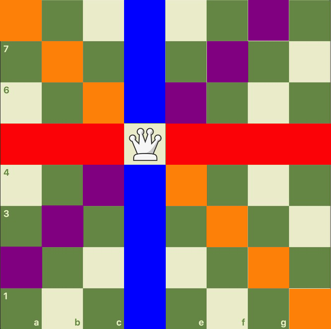
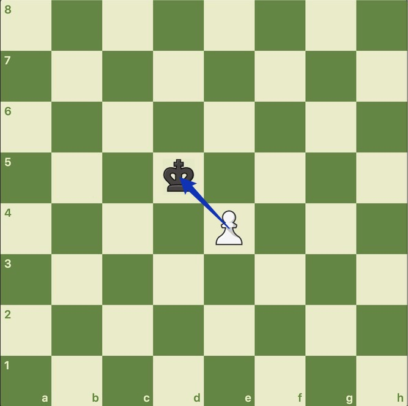
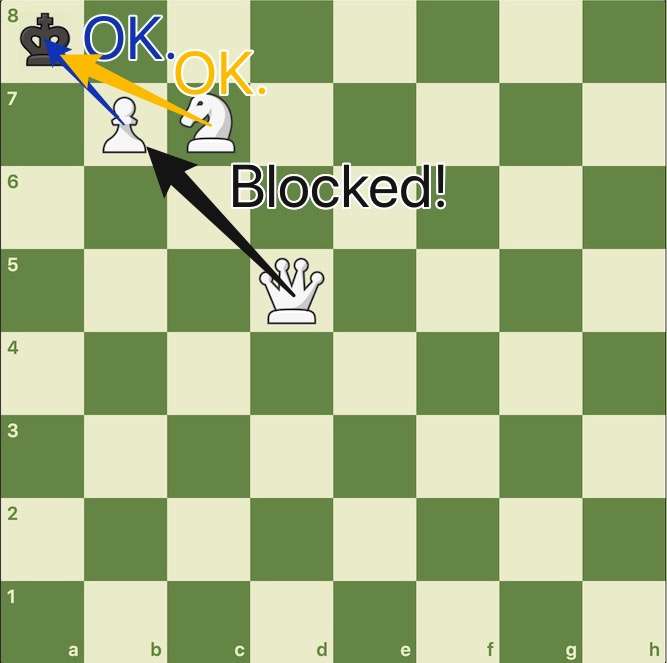

U115500 【国际象棋】判断将军 题解
$\color{red}{前置知识——国际象棋的基本规则}$
在洛谷云剪贴板中，我们已经简略地介绍了最基本的吃法。我们再来通过几张丑图进一步了解。
车：

象：

后：

马：

兵：

特别地，对于兵，我们要注意其吃子的方向性，千万不能弄错。
重点来看阻挡的情况：

这时，位于$B7$的白兵正控制着$A8$处的王。而位于$D5$的后虽然在路径上是可以到达$A8$，但其中间隔着一个兵，所以不能算作将军。
不过，当白马位于$C7$时，却可以控制到王，因为马可以跳过别的棋子，而且不存在蹩马腿之说。
$\color{red}{预处理}$
可以运用$\text{C++}$的$\text{map}$来实现字符与数字的转换，方便按顺序输出。
把找到的字符$\text K$或$\text k$（即王）的坐标保存下来，并确定是白王还是黑王。
接着，与该王同一方的棋子忽略，异方则判断是否能够控制到王的位置。
把能控制到的棋子的类型和个数保存，最后输出。
不妨用$1,2,3,4,5,6$分别表示$\text{K, R, B, Q, N, P}$或$\text{k, r, b, q, n, p}$。
$\color{red}{判断将军}$
判断各个棋子是否能控制到王的过程，在本题中起着重要的作用。
$\color{purple}{车}$
车可以控制同一行或同一列的棋子。使用$4$个$\text{for}$循环，遇到王就返回$\text{true}$，遇到其他棋子立刻跳出循环，以防止越子行为。
1 | bool rook(int x,int y) |
$\color{purple}{象}$
车可以控制与其同主对角线和同副对角线上的棋子。同样使用$4$个$\text{for}$循环，只不过有两个变量来表示坐标。
1 | bool bishop(int x,int y) |
$\color{purple}{后}$
后的走法是车与象的集合，所以只要这两个走法有任意一种能控制到王，后就能控制到王。
1 | bool queen(int x,int y) |
$\color{purple}{马}$
我们习惯用方向增量数组保存马的遍历方式：
1 | int dx[]={-2,-2,-1,-1,1,1,2,2},dy[]={-1,1,-2,2,-2,2,-1,1}; |
然后，我们按照此遍历方式，不断计算下一次的位置，判断是否能控制到国王。由于我们保存了国王的坐标，所以不需考虑越界的情况。
1 | bool knight(int x,int y) |
$\color{purple}{兵}$
我们需要对兵的阵营（即颜色）进行判断：
1 | bool pawn(int x,int y) |
$\color{purple}{汇总}$
我们只需要建立一个函数，让对应的棋子进行对应类型的判断。
1 | //前提条件 |
最后，我们只需要对$64$个位置上的棋子一一判断，看是否能控制到对方的王即可。
$\color{red}{总结}$
只要对国际象棋规则有一定的初步了解，您就能够快速地切掉本题。
U115500 【国际象棋】判断将军 题解
https://shenyouran.gitee.io/code/private/chess/check/report.html
install_url to use ShareThis. Please set it in _config.yml.